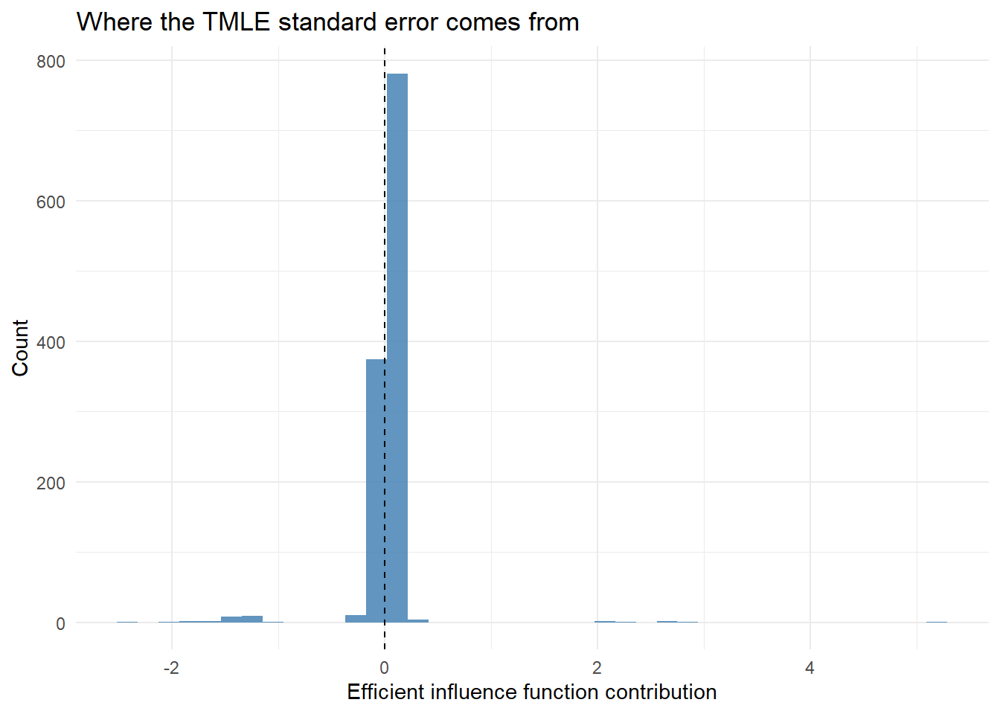
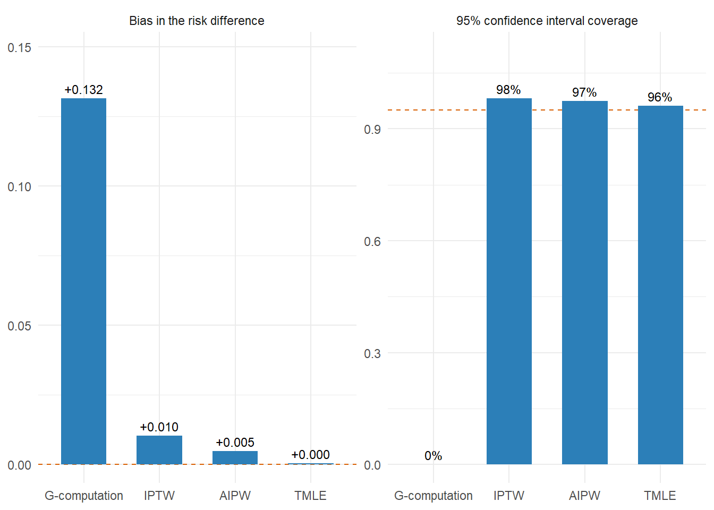

Bridging outcome modeling and weighting for more robust causal effect estimation
Estimated reading time: 50 minutes
Learning objectives
Say what doubly robust protects against, and what it does not
Describe the efficient influence function in words, and the three ways this book uses it
Compute the AIPW one-step estimator from an outcome model and a propensity model
Run the TMLE targeting step and say why TMLE stays inside the bounds of the outcome scale
Read influence-function standard errors and recognize when they cannot be trusted
In previous chapters, you learned:
G-computation depends on correctly modeling the outcome
IPTW depends on correctly modeling the treatment mechanism
Each of those methods stakes everything on one model. AIPW (augmented inverse probability weighting) and TMLE (targeted maximum likelihood estimation) draw on both.
10.1 Why doubly robust estimators?
A doubly robust estimator stays consistent if either the treatment model or the outcome model is correctly specified (Laan and Rose 2011; Bang and Robins 2005). (Consistent, here and throughout the chapter, is the statistical sense of the word: the estimate converges to the true effect as the sample grows. It is unrelated to the consistency assumption of Chapter 5.) Because it draws on both sources of information, it gives you two chances to get the answer right, and it often does better than g-computation or IPTW used alone (Schuler and Rose 2017; Smith et al. 2023). The goal is unchanged from previous chapters: estimate \(E[Y(1)] - E[Y(0)]\), the population-level risk difference.
10.2 Two roads to the same destination: AIPW and TMLE
AIPW (Robins, Rotnitzky, and Zhao 1994; Bang and Robins 2005) and TMLE (Laan and Rubin 2006) are two strategies for solving the same problem. Each produces an estimator of the ATE (average treatment effect) that uses both the outcome model \(Q(A, W) = E[Y \mid A, W]\) and the propensity score \(g(W) = P(A=1 \mid W)\), is doubly robust, and is semiparametrically efficient: it reaches the smallest variance any estimator can achieve without assuming a parametric model. Together, \(Q\) and \(g\) are called the nuisance functions: we have to estimate them on the way to the ATE, but they are not themselves the quantity we care about. Both estimators are derived from the efficient influence function (EIF) for the ATE. Under regularity conditions, technical requirements on how well the nuisance estimates behave that are spelled out later in the chapter, both reach the same asymptotic distribution and the same efficiency bound. The EIF is also called the efficient influence curve (EIC). The two names mean the same thing; EIF is the more common one in the literature, and the code in this book uses EIC as the variable name.
What separates them is how they put the EIF to work:
AIPW is a one-step estimator. It begins with the g-computation estimate (the mean of \(Q(1, W) - Q(0, W)\)) and adds an explicit correction term derived from the EIF. That sum solves the EIF estimating equation by construction.
TMLE is a substitution (plug-in) estimator. It begins with the same initial \(Q\), then modifies it (through a small “fluctuation” guided by \(g\)) until the substitution estimator \(\frac{1}{n}\sum_i [Q^*(1, W_i) - Q^*(0, W_i)]\) already solves the EIF equation. There is no extra correction term because the correction has been folded into the updated \(Q^*\).
Both routes land on an estimator with the same large-sample behavior. Their structural difference, a sum versus a substitution, is what produces the practical differences we return to at the end of the chapter. TMLE estimates respect the bounds of the outcome scale (probabilities stay in \([0, 1]\), for instance), they read as means of valid counterfactual predictions, and they slot naturally into cross-validated machine learning. AIPW is simpler to code and just as valid when propensity scores are well-behaved.
Three ways to use the efficient influence function
AIPW and TMLE are two of three standard strategies for turning the same efficient influence function into an estimator. All three are asymptotically equivalent and share the same standard error; they part ways only in finite samples.
One-step (AIPW). Start from the g-computation plug-in and add the average of the influence-function correction. Easiest to code, but the correction is unbounded, so under extreme propensity scores the estimate can fall outside the parameter space.
Estimating equation. Solve the influence-function estimating equation for the parameter directly. Flexible, but like the one-step it is not a substitution estimator, so nothing guarantees the estimate stays in range.
Substitution (TMLE). Update the outcome model until the plug-in itself solves the equation. More machinery to implement, but the estimate is a mean of valid predictions, so it respects bounds, re-aggregates cleanly to other scales, and pairs naturally with cross-fitting.
On large samples with good overlap the three agree. The differences surface in finite samples and under poor overlap, so TMLE is the usual default for bounded outcomes.
What is an influence function? (plain version)
Almost any estimator in this book can be rewritten, to a close approximation, as a simple average of one number per patient. That per-patient number is the patient’s value of the influence function: it says how far, and in which direction, that single patient pulls the final estimate. An applied reader needs only two consequences of this. First, the spread of those per-patient pulls is what sets the standard error: take their standard deviation and divide by the square root of the sample size. Second, an estimator reaches the smallest possible standard error when its influence function is the efficient one; Bickel et al. (1993) and Tsiatis (2006) develop that theory in full, and Hines et al. (2022) is a shorter applied introduction. TMLE nudges the fitted models until the pulls average to zero, which is what makes it consistent and doubly robust, and because the pulls it zeroes out are the efficient influence function specifically, the estimator also attains the efficiency bound.
Every patient casts a vote on the final estimate. Most votes are quiet, but a few loud ones set the margin of error. Two patients show the range. Suppose the estimate is a risk difference and we have computed each patient’s influence value. An ordinary patient, well matched on covariates with a predictable outcome, might have an influence value near \(0\), so dropping them barely moves the estimate. A high-leverage patient, say a treated patient with a propensity score of only \(0.03\) (treatment was very unlikely for someone with their covariates) who then died, might have an influence value of \(+18\). That one patient hauls the estimate upward, and a handful like them widen the confidence interval, because a few large values inflate the standard deviation that sets the standard error. The inference code later in this chapter computes these per-patient numbers.
10.3 AIPW: The one-step doubly robust estimator
What makes AIPW “doubly robust”?
AIPW augments the g-computation estimator with an inverse-probability-weighted (IPW) residual correction. The construction guarantees that:
If the treatment model is correctly specified (and positivity holds), the IPW correction gives a consistent estimate of the causal effect even when the outcome model is wrong
If the outcome model is correctly specified, the correction term has mean zero and the g-computation component carries the estimate
If both are correctly specified (and the nuisance estimates converge fast enough), the estimator hits the semiparametric efficiency bound(Hahn 1998), the smallest asymptotic variance available among regular asymptotically linear estimators
This is the one-step idea from semiparametric theory: take a plug-in estimator, add the empirical mean of the EIF correction, and the result is a \(\sqrt{n}\)-consistent estimator that solves the EIF estimating equation (Robins, Rotnitzky, and Zhao 1994; Bang and Robins 2005). (\(\sqrt{n}\)-consistent means the estimation error shrinks at the rate \(1/\sqrt{n}\), the same rate as a sample mean. That rate is what lets a normal approximation deliver confidence intervals and hypothesis tests.)
Keep in mind that “doubly robust” is a consistency property. It guarantees the estimator converges to the truth as \(n \to \infty\) under the stated conditions, not that it is unbiased in finite samples.
10.3.1 Formula
Let:
\(g(W) = P(A = 1 \mid W)\) be the propensity score
\(Q(a, W) = E[Y \mid A = a, W]\) be the outcome regression
The structure is G-computation plus an EIF correction. The first term, \(Q(a, W_i)\), is the outcome-model prediction (the g-computation ingredient); the second term is an IPW-weighted residual that corrects any bias in the outcome model. If \(Q\) is correct, the residuals average to zero and the correction vanishes, so we recover g-computation. If \(Q\) is wrong but \(g\) is correct, the IPW correction fixes the bias, so we recover IPTW-style behavior. The “augmentation” in AIPW’s name is this correction, added to the g-computation plug-in.
10.4 HIV antiretroviral therapy cohort
We use the same point-treatment HAART cohort from Chapter 8 and Chapter 9 so that all three estimators (g-computation, IPTW, AIPW/TMLE) can be compared on identical data. The treatment is ever_haart (1 = initiated HAART at any point, 0 = never), the outcome is died, and we adjust for baseline age, sex, and baseline square-root CD4 count.
10.5 Fit outcome and propensity score models
10.6 Compute AIPW estimator
Each AIPW component starts with the outcome-model prediction and adds a weighted residual correction. For instance, Q1 + ever_haart * (died - Q1) / ps corrects \(Q(1, W)\) by upweighting the residual \((\text{died} - Q1)\) for treated individuals. This structure is what makes AIPW doubly robust: even if \(Q\) is wrong, the IPW correction fixes the bias, and if \(g\) is wrong instead, the outcome model carries the estimate.
10.7 TMLE: The substitution doubly robust estimator
TMLE solves the same EIF estimating equation as AIPW, but it gets there by modifying \(Q\) instead of tacking on an external correction. After a small targeted update guided by the propensity score (the “clever covariate”), the substitution estimator \(\frac{1}{n}\sum_i [Q^*(1, W_i) - Q^*(0, W_i)]\) already solves the EIF equation by construction.
This substitution structure has three practical consequences:
Predicted probabilities always stay in \([0, 1]\) (the AIPW correction can push the sum outside the parameter space when propensity scores are extreme)
The estimator is a mean of valid counterfactual predictions, so you can stratify, transform, and re-aggregate without re-deriving anything
It fits naturally with ensemble machine learning (Super Learner) (Laan, Polley, and Hubbard 2007), and cross-validated TMLE (CV-TMLE) gives valid inference under regularity conditions even when the nuisance functions are estimated with flexible learners (Zheng and Laan 2010, 2011; Levy 2018)
10.8 TMLE step by step
Step 1: Fit the initial outcome model (Q). Fit a model for \(E[Y \mid A, W]\). We did this above as Qmod, a logistic regression of died on ever_haart, age, sex, and cd4_sqrt_baseline. From it we need three sets of predictions for each individual:
Qinit, the prediction at the treatment the patient actually received, used to fit the fluctuation in Step 4;
\(Q_n^0(1, W_i)\), the predicted outcome if treated, stored above as Q1;
\(Q_n^0(0, W_i)\), the predicted outcome if untreated, stored above as Q0.
These predictions are “initial” because they have not yet been targeted toward the causal parameter of interest.
Step 2: Estimate the propensity score. The propensity score \(g(W) = P(A = 1 \mid W)\) is needed to construct the clever covariate in the next step. We already fit this model above.
Definition: The clever covariate
The clever covariate\(H(A, W)\) is the ingredient that makes TMLE “targeted.” It is derived from the efficient influence function for the ATE:
For computing the counterfactual means, we also need the treatment-specific components:
\(H_1(W) = \frac{1}{g(W)}\) (for the treated potential outcome)
\(H_0(W) = \frac{-1}{1 - g(W)}\) (for the control potential outcome)
Think of it as a nudge that pushes hardest where the outcome model is most vulnerable: the patients who got a treatment almost no one like them received. More precisely, the clever covariate is large when the received treatment was unlikely given the covariates, meaning a small \(g(W)\) for a treated patient or a small \(1 - g(W)\) for an untreated one. Those are the patients where the outcome model is most likely to be wrong, since few similar patients received the same treatment, so the update leans hardest on them. That is how the clever covariate directs the fluctuation to reduce bias for the specific estimand we care about, the ATE.
Step 3: Compute the clever covariate at each patient’s observed treatment. Recall the two patients from the influence-function box. The treated patient with \(g(W) = 0.03\) gets \(H = 1/0.03 \approx 33\); multiply that by a residual \(Y - Q^*\) of roughly \(0.55\) and you get the influence value of about \(+18\) quoted there. A well-matched patient with \(g(W)\) near \(0.5\) gets \(|H| = 2\) and, with a small residual, an influence value near zero.
\(H(A,W)\) is derived from the efficient influence function for the ATE. For treated observations (\(A=1\)) it equals \(1/g(W)\); for controls (\(A=0\)) it equals \(-1/(1-g(W))\). This combined form simultaneously handles both arms and directs the fluctuation step specifically toward the ATE estimand rather than any other parameter.
Step 4: Fit the fluctuation model and update predictions. This is the “targeting” step, and it is where TMLE structurally parts ways with AIPW. Instead of adding the EIF correction to the g-computation estimate (the AIPW recipe), we use the propensity score (through the clever covariate) to update Q until the correction term vanishes inside the substitution estimator.
This step estimates one number, \(\epsilon\). We fit a logistic regression of \(Y\) on \(H\) with the initial logit-predictions as an offset:
The offset holds the Step 1 predictions fixed: no coefficient is estimated for them, and they enter as a known, patient-specific intercept. The clever covariate is the only predictor with a free coefficient, and that coefficient is \(\epsilon\). The estimated \(\hat{\epsilon}\) then updates (fluctuates) the initial predictions. This fluctuation must be applied to the counterfactual predictions \(Q_n^0(1, W)\) and \(Q_n^0(0, W)\) using their respective clever covariates \(H_1\) and \(H_0\). The step ensures the final estimates solve the efficient influence function equation, which is what gives TMLE its double robustness and efficiency.
The targeting step does not try to improve prediction in general; it adjusts the initial outcome predictions specifically to reduce bias for the ATE. A well-calibrated prediction model might predict individual outcomes accurately yet still produce a biased ATE once predictions are averaged. The fluctuation step corrects this discrepancy by pulling in information from the propensity score.
The -1 suppresses the intercept; offset(logit(Qinit)) fixes the initial Q predictions on the logit scale so only the coefficient on H (the fluctuation parameter ε) is estimated
Logistic family keeps the update on the probability scale; .coef extracts the single ε; a small number close to zero means the initial Q needed little correction
Step 5: Apply the fluctuation to the counterfactual predictions and average. Make two copies of the data. In the first, set everyone’s treatment to “treated” and predict each patient’s outcome; in the second, set everyone to “control” and predict again. These are the counterfactual predictions: each patient’s estimated outcome in a world where they were treated and in a world where they were not. The targeting step then nudges both, using the arm-specific clever covariates, and the TMLE estimate is the difference of the two averages.
Treatment-arm-specific clever covariates: \(H_1(W) = 1/g(W)\) targets the treated potential outcome; \(H_0(W) = -1/(1-g(W))\) targets the control potential outcome. These must be evaluated at the counterfactual treatment value, not the observed one.
Apply the fluctuation on the logit scale, then expit() (the inverse logit, identical to base R’s plogis()) maps back to probability, guaranteeing all targeted predictions stay in \([0,1]\), unlike AIPW which can violate these bounds
The TMLE substitution estimator: take the sample mean of each arm’s targeted predictions. No explicit weighting needed; the clever covariate already incorporated the propensity score.
The initial outcome and propensity score models need not be simple logistic regressions (generalized linear models, or GLMs). They can be estimated with Super Learner (Laan, Polley, and Hubbard 2007), an ensemble machine learning approach covered in the next chapter that reduces sensitivity to model misspecification. In plain terms, Super Learner uses cross-validation to combine many candidate models into a single prediction. It is formally introduced in Chapter 11, and for now the Q.SL.library and g.SL.library arguments below can be read as a flexible stand-in for the single GLM nuisance fits.
10.8.1 Watching the targeting step move the estimate
The fluctuation is easier to believe once you have seen it work. The simulation below builds a dataset where the outcome truly depends on \(W\) through a squared term, then fits an outcome model that leaves that term out. The plug-in estimate from that model is badly wrong. Targeting, which uses only the propensity score and the residuals, pulls it most of the way back.
set.seed(2026)n <-1500W <-rnorm(n)A <-rbinom(n, 1, plogis(-0.4+0.5* W +0.8* W^2))Y <-rbinom(n, 1, plogis(-1+0.8* A +1.0* W +1.0* W^2))d <-data.frame(W, A, Y)# Deliberately too simple: the W^2 term is left outqfit <-glm(Y ~ A + W, family = binomial, data = d)Q1 <-predict(qfit, transform(d, A =1), type ="response")Q0 <-predict(qfit, transform(d, A =0), type ="response")QA <-predict(qfit, type ="response")# Correctly specified treatment modelg <-predict(glm(A ~ W +I(W^2), family = binomial, data = d), type ="response")HA <-ifelse(A ==1, 1/ g, -1/ (1- g))psi_plugin <-mean(Q1 - Q0) # before targeting# One-parameter fluctuation on the logit scaleeps <-coef(glm(Y ~-1+ HA, family = binomial, offset =qlogis(QA)))Q1s <-plogis(qlogis(Q1) + eps / g)Q0s <-plogis(qlogis(Q0) - eps / (1- g))psi_tmle <-mean(Q1s - Q0s) # after targetingic <- HA * (Y -plogis(qlogis(QA) + eps * HA)) + (Q1s - Q0s) - psi_tmlese <-sd(ic) /sqrt(n)truth <-local({set.seed(1); Wt <-rnorm(4e6)mean(plogis(-1+0.8+ Wt + Wt^2)) -mean(plogis(-1+ Wt + Wt^2))})c(epsilon =round(unname(eps), 4), plug_in =round(psi_plugin, 4),tmle =round(psi_tmle, 4), se =round(se, 4), truth =round(truth, 4))
epsilon plug_in tmle se truth
-0.1148 0.3284 0.1851 0.0258 0.1560
Figure 10.1: One dataset, one targeting step. The outcome model omits a term that matters, so the plug-in estimate more than doubles the true risk difference. The fluctuation uses the propensity score and the outcome residuals to pull the estimate down, and the resulting interval covers the truth. Targeting changed the estimate without touching the outcome model’s form.
10.9 TMLE inference: Standard errors and confidence intervals
One major advantage of TMLE is that inference follows directly from the efficient influence function (EIF). Using the clever covariate \(H(A, W)\) defined above, where \(H(A, W) = A/g(W) - (1-A)/(1-g(W))\), the EIF for the ATE at the TMLE fit can be written in a single unified form:
Equivalently, expanding \(H\) into its treatment-arm-specific components \(H_1(W) = 1/g(W)\) and \(H_0(W) = -1/(1-g(W))\) (which already include the sign for each arm):
where \(\hat{\psi}\) is the TMLE ATE estimate. Because the EIF is mean-zero at the TMLE fit, its sample variance is \(\hat{\sigma}^2 = \frac{1}{n}\sum_i D_i^2\). The variance of the estimator is then this EIF variance divided by the sample size, \(\widehat{\text{Var}}(\hat{\psi}) = \hat{\sigma}^2 / n\), so the standard error is \(\hat{\sigma}/\sqrt{n}\).
The same EIF underlies AIPW’s variance estimator, which is the deeper reason both estimators share an asymptotic distribution. They differ in how they form the point estimate, not in the influence function used for inference.
When is EIF-based inference valid?
The EIF-based variance estimator and resulting Wald-type confidence intervals are asymptotically valid when (i) at least one nuisance model is consistently estimated, (ii) positivity holds, and (iii) certain regularity/rate conditions are met. When data-adaptive or machine learning methods estimate the nuisance functions, those conditions include an empirical-process condition (Donsker class membership, a limit on how flexible the nuisance estimators may be) that flexible learners typically violate. Cross-fitting (sample splitting) or CV-TMLE removes the need for it. Cross-fitting is available in the tmle3 and drtmle R packages (Zivich and Breskin 2021). The classic tmle package (Gruber and Laan 2012) does not cross-fit by default, but it remains valid when the Super Learner library is not too aggressive, for example one that leaves out very flexible learners such as the highly adaptive lasso (HAL). See Zheng and Laan (2011) for the theoretical foundations, Vaart (1998) for the empirical-process results these conditions rest on, Chernozhukov et al. (2018) for the cross-fitting argument in the double machine learning formulation, and Kennedy (2024) for a recent review aimed at applied statisticians.
Show code
library(ggplot2)tibble(eic = EIC) |>ggplot(aes(eic)) +geom_histogram(bins =40, fill ="steelblue", alpha =0.85) +geom_vline(xintercept =mean(EIC), linetype ="dashed") +labs(x ="Efficient influence function contribution", y ="Count",title ="Where the TMLE standard error comes from") +theme_minimal()

Figure 10.2: Each patient’s contribution to the TMLE estimate, the value of the efficient influence function (EIF). The estimate behaves like the mean of these contributions (centered near zero here), and the standard error is their standard deviation divided by \(\sqrt{n}\). The spread, and especially the tails, set the width of the confidence interval.
Select the targeted Q prediction and clever covariate at each observation’s observed treatment value; needed to form the IPW-weighted residual term that corrects for outcome model error
The EIF has two parts: (a) \(H(A,W)(Y - Q^*)\); an IPW-weighted residual that corrects any outcome model bias, and (b) \((Q_1^* - Q_0^* - \hat\psi)\); the centered substitution component. When the fluctuation step correctly solved the EIF equation, the sample mean of the EIF is exactly zero.
The EIF variance divided by \(n\) gives the semiparametric efficient variance; this is valid even when machine learning is used for nuisance models (with appropriate cross-fitting)
The EIF-based standard error is the other main output of TMLE. Figure 10.2 plots each patient’s EIF contribution, and the standard error is the spread of that histogram divided by \(\sqrt{n}\), with the tails doing most of the work. Because the fluctuation step solves the EIF estimating equation, the resulting confidence interval achieves approximately correct coverage under regularity conditions, even when machine learning is used for the nuisance models (provided cross-fitting or another sample-splitting technique is employed). If the confidence interval excludes zero, we have evidence at the 95% confidence level that the treatment has a non-null causal effect on the outcome.
10.10 AIPW vs TMLE: A detailed comparison
The chapter opened with the claim that AIPW and TMLE are two roads to the same destination. With both estimators now in hand, we can say what they share and where they part.
10.10.1 What is the same
Both AIPW and TMLE are constructed from the same efficient influence function for the ATE. As a direct consequence:
Doubly robust. Both are consistent for the ATE if either the outcome model \(Q\) or the propensity score \(g\) is correctly specified.
Semiparametric efficiency. Both achieve the semiparametric efficiency bound when both nuisances converge fast enough (typically rates of at least \(n^{-1/4}\) each, so the product is faster than \(n^{-1/2}\)).
Same asymptotic distribution. Under regularity conditions, both are asymptotically linear with the same influence function (the EIF), so both have the same asymptotic variance and the same EIF-based standard errors.
Same nuisance requirements. Both need an outcome model, a propensity model, positivity, and (when flexible learners are used) cross-fitting to control the empirical process bias from data-adaptive nuisance estimation.
In large samples, on data with well-behaved propensity scores, AIPW and TMLE are nearly indistinguishable. They part company in finite samples, and in their structural form.
10.10.2 What is different, and why
The structural distinction is additive correction (AIPW) versus substitution / fluctuation (TMLE), and nearly every practical difference traces back to it.
Property
AIPW
TMLE
How the EIF equation is solved
Add the empirical EIF correction to g-computation
Update \(Q \to Q^*\) until the substitution estimator solves it
Form of the estimator
Sum of plug-in + IPW-weighted residual
Mean of \(Q^*(1, W) - Q^*(0, W)\)
Predictions bounded in \([0, 1]\)
No: the IPW correction is unbounded; with extreme \(g\), the estimate can exit the parameter space
Designed alongside Super Learner; CV-TMLE is the standard recipe
Implementation complexity
Simple (one formula)
Moderate (initial fit + fluctuation + targeted predictions)
Inference (EIF-based SEs)
Yes
Yes
The most consequential of these is boundedness. When some propensity scores are near 0 or 1, the AIPW correction term \(\frac{A}{g(W)}(Y - Q(1,W))\) can be large in magnitude and same-signed across many observations. Add it to the g-computation plug-in and you can get probability estimates above 1 or below 0, or risk-difference estimates outside \([-1, 1]\). TMLE absorbs the same correction into\(Q\) on the logit scale, so the substitution estimator is always a mean of valid probabilities. This is a structural guarantee, not a finite-sample lucky break.
The next example is deliberately small and extreme, so the mechanism is easy to see. Two treated patients had a propensity score of only \(0.02\) (they looked very unlikely to be treated) and did have the outcome, so their inverse-probability weights are enormous.
g <-c(0.02, 0.02, 0.50, 0.50, 0.98, 0.98)A <-c(1, 1, 1, 0, 1, 0)Y <-c(1, 1, 0, 0, 1, 0)Q1 <-c(0.30, 0.30, 0.40, 0.40, 0.60, 0.60) # outcome-model risk under treatment# AIPW estimate of the treated-world mean E[Y(1)]: plug-in plus IPW correctionaipw_mu1 <-mean(Q1 + (A ==1) / g * (Y - Q1))round(aipw_mu1, 2)
[1] 12.03
The AIPW estimate of a probability comes out far above 1, which is impossible. The unbounded \(A/g(W)\) correction, summed over a few enormous weights, has pushed the plug-in outside the parameter space. TMLE folds the same correction into the outcome model on the logit scale, so every updated prediction is plogis(...), a valid probability strictly between 0 and 1. Averaging numbers that each lie in \([0, 1]\) cannot leave \([0, 1]\), so the TMLE substitution estimate stays in range no matter how extreme the propensity scores. That one property is the practical reason to prefer TMLE when overlap is poor.
10.10.3 When to prefer which
In practice the choice usually comes down to four questions:
Is propensity score overlap clean? If yes, AIPW is fine and simpler to implement. If no (extreme propensities, small overlap region), prefer TMLE for the boundedness guarantee.
Are you using flexible machine learning? If yes, prefer CV-TMLE (the most mature ML-aware doubly robust workflow). AIPW with sample splitting, the double machine learning (DML) approach, also works, but its tooling is less integrated with the rest of the targeted learning ecosystem.
Do you need to stratify or post-process the estimate? If yes (e.g., subgroup risk differences, transformations to relative scales), prefer TMLE, whose substitution form lets you re-aggregate \(Q^*\) directly.
Is this a quick prototype or a publishable analysis? AIPW is excellent for prototyping and for a sanity check next to g-computation and IPTW. For published doubly robust estimates, TMLE is the usual choice in the targeted learning literature.
10.11 Numerical side-by-side on the HAART cohort
Because both estimators target the same EIF on the same data with the same nuisance fits, their point estimates and standard errors should be very close.
The two estimates and their standard errors should agree to within roughly the third decimal. They are not identical because AIPW uses the initial \(Q\) inside the substitution component while TMLE uses the targeted \(Q^*\), and the fluctuation step nudges \(Q^*\) away from \(Q\) by an amount governed by \(\hat\epsilon\). When propensity scores are well-behaved (as they are here), \(\hat\epsilon\) is small and so is the gap. When some propensity scores are extreme, \(\hat\epsilon\) can grow and the two estimators diverge. That divergence is itself a useful signal that the boundedness and stability advantages of TMLE are starting to matter.
10.12 Does it work? Bias and coverage over 500 replications
A single dataset cannot tell you whether an estimator is trustworthy. The question a methods reader asks is whether the estimator is unbiased across repeated samples, and whether its 95% interval actually contains the truth 95% of the time. The simulation below answers both for the four estimators in this chapter, on the same data-generating process as above: the outcome model is wrong, the treatment model is right.
sim_once <-function(n =1000) { W <-rnorm(n) A <-rbinom(n, 1, plogis(-0.4+0.5* W +0.8* W^2)) Y <-rbinom(n, 1, plogis(-1+0.8* A +1.0* W +1.0* W^2)) d <-data.frame(W, A, Y) qf <-glm(Y ~ A + W, family = binomial, data = d) # misspecified Q1 <-predict(qf, transform(d, A =1), type ="response") Q0 <-predict(qf, transform(d, A =0), type ="response") QA <-predict(qf, type ="response") g <-predict(glm(A ~ W +I(W^2), family = binomial, data = d), # correcttype ="response") g <-pmin(pmax(g, 0.01), 0.99) HA <-ifelse(A ==1, 1/ g, -1/ (1- g)) psi_g <-mean(Q1 - Q0) # g-computation ic_g <- (Q1 - Q0) - psi_g psi_i <-mean(A * Y / g - (1- A) * Y / (1- g)) # IPTW ic_i <- A * Y / g - (1- A) * Y / (1- g) - psi_i psi_a <-mean(HA * (Y - QA) + Q1 - Q0) # AIPW ic_a <- HA * (Y - QA) + (Q1 - Q0) - psi_a eps <-coef(glm(Y ~-1+ HA, family = binomial, offset =qlogis(QA))) Q1s <-plogis(qlogis(Q1) + eps / g); Q0s <-plogis(qlogis(Q0) - eps / (1- g)) psi_t <-mean(Q1s - Q0s) # TMLE ic_t <- HA * (Y -plogis(qlogis(QA) + eps * HA)) + (Q1s - Q0s) - psi_tc(psi_g, psi_i, psi_a, psi_t,sd(ic_g), sd(ic_i), sd(ic_a), sd(ic_t)) /c(rep(1, 4), rep(sqrt(n), 4))}set.seed(99)reps <-t(replicate(500, sim_once()))est_names <-c("G-computation", "IPTW", "AIPW", "TMLE")performance <-data.frame(Estimator = est_names,Bias =colMeans(reps[, 1:4]) - truth,`SD of estimates`=apply(reps[, 1:4], 2, sd),Coverage =sapply(1:4, function(j)mean(reps[, j] -1.96* reps[, j +4] <= truth & truth <= reps[, j] +1.96* reps[, j +4])),check.names =FALSE)knitr::kable(performance, digits =4)
Estimator
Bias
SD of estimates
Coverage
G-computation
0.1315
0.0301
0.000
IPTW
0.0104
0.0482
0.982
AIPW
0.0047
0.0346
0.974
TMLE
0.0003
0.0313
0.962
Show code
long <-rbind(data.frame(Estimator =factor(est_names, levels = est_names),value = performance$Bias, ref =0,panel ="Bias in the risk difference"),data.frame(Estimator =factor(est_names, levels = est_names),value = performance$Coverage, ref =0.95,panel ="95% confidence interval coverage"))long$panel <-factor(long$panel, levels =c("Bias in the risk difference","95% confidence interval coverage"))ggplot(long, aes(Estimator, value)) +geom_hline(aes(yintercept = ref), linetype ="dashed", colour ="#d95f02") +geom_col(fill ="#2c7fb8", width =0.6) +geom_text(aes(label =ifelse(panel =="Bias in the risk difference",sprintf("%+.3f", value),sprintf("%.0f%%", 100* value))),vjust =-0.5, size =3.1) +facet_wrap(~panel, scales ="free_y") +scale_y_continuous(expand =expansion(mult =c(0.05, 0.18))) +labs(x =NULL, y =NULL) +theme_minimal()

Figure 10.3: Bias and 95% interval coverage over 500 replications, with the outcome model misspecified and the treatment model correct. G-computation inherits the outcome model’s error, and its intervals never contain the truth. IPTW is nearly unbiased but pays for it in width, so it over-covers. AIPW and TMLE use both models and recover the truth; TMLE’s coverage is closest to nominal.
Read the left panel first. G-computation overstates the risk difference by more than 80% of its true value, because a misspecified outcome model is the only thing it has. IPTW, using the correct treatment model, is close to unbiased. AIPW and TMLE use both and land closest.
The right panel is the part that matters for a reported result. G-computation’s interval contains the truth in none of the 500 replications: the point estimate is wrong and the plug-in standard error has no way to know it. IPTW over-covers, because the Horvitz-Thompson influence function ignores that the propensity score was estimated, which makes the interval conservative. TMLE covers at close to the nominal rate. Double robustness protected the point estimate; the efficient influence function is what made the interval valid.
10.13 Summary
Key takeaways
AIPW and TMLE both solve the EIF estimating equation for the ATE; both are doubly robust and both achieve the semiparametric efficiency bound
AIPW = g-computation + EIF correction (a sum); TMLE = g-computation with targeted \(Q^* \to\) substitution estimator (a plug-in)
The substitution form gives TMLE bounded predictions, plug-in interpretability, and a natural fit with Super Learner / CV-TMLE
AIPW is simpler and equally valid when propensity scores are well-behaved; TMLE is the usual choice when machine learning is used or propensity scores are extreme
Inference for both rests on the same EIF, so their standard errors share the same theoretical justification
10.13.1 Check your understanding
Q1. What does “doubly robust” mean in practice? Does it mean you can ignore model specification entirely?
No. “Doubly robust” means the estimator is consistent if either the treatment model or the outcome model is correctly specified. It says nothing about the case where both are wrong. It does not give you license to ignore model specification: if both nuisance models are badly misspecified, the estimator can be biased. You should still specify both models as carefully as you can.
Q2. Why does TMLE use a “clever covariate” derived from the propensity score, and what happens if propensity scores are extreme?
The clever covariate \(H(A, W) = A / g(W) - (1 - A) / (1 - g(W))\) is derived from the efficient influence function for the ATE. It directs the fluctuation of the initial outcome model toward the specific causal parameter of interest, so that the final estimate solves the EIF estimating equation. If propensity scores are extreme (near 0 or 1), the clever covariate becomes very large, which can destabilize the fluctuation step. So practical positivity (adequate overlap in the propensity score distributions) matters for TMLE as much as it does for IPTW.
Q3. Your TMLE estimate of a risk probability is 0.85. Could AIPW have produced an estimate above 1.0 for the same data?
Yes, and this is the structural reason TMLE is usually preferred for bounded outcomes. AIPW is a sum: the g-computation plug-in plus an unbounded IPW-weighted residual correction. When propensity scores are extreme, that correction can be large enough to push the sum outside the parameter space. TMLE absorbs the same correction into \(Q\) on the logit scale, so the substitution estimator is a mean of valid probabilities and stays in \([0, 1]\) by construction. Both estimators target the same EIF; they differ in how they keep the result inside the parameter space.
Q4. Will AIPW and TMLE always give similar answers in practice?
In large samples on data with well-behaved propensity scores, yes: they share the same asymptotic distribution and the same EIF-based standard errors. Visible disagreement between the two estimates usually has one of three causes:
Some propensity scores are near 0 or 1, so the AIPW correction is large and the fluctuation parameter \(\hat\epsilon\) is non-trivial.
One nuisance function is much more wrong than the other, so the boundedness behavior matters.
The sample is small, and the estimators’ finite-sample distributions have not yet settled onto the asymptotic one.
A meaningful AIPW versus TMLE gap is therefore a useful diagnostic, not a contradiction.
10.13.2 Software implementation (R)
This example demonstrates the double robustness property using the tmle package (Gruber and Laan 2012). We deliberately misspecify one nuisance model at a time to show that the TMLE estimate remains consistent as long as at least one model is correct. For accessible introductions to the tmle package in applied settings, see Hoffman (2020) and Talbot et al. (2025).
Simulate data with a nonlinear confounder-outcome relationship
Falls back to a manual demonstration if tmle is unavailable
Show code
set.seed(1)n <-1000W <-rnorm(n)A <-rbinom(n, 1, plogis(0.3* W +0.2* W^2))Y <-0.5* A +sin(W) +rnorm(n, sd =0.3) # true ATE = 0.5if (requireNamespace("tmle", quietly =TRUE)) {library(tmle)## Scenario A: correct Q model, misspecified g (intercept only)1 fit_a <-tmle(Y = Y, A = A, W =data.frame(W = W),2Q.SL.library =c("SL.glm", "SL.earth"),3g.SL.library ="SL.mean")cat("Scenario A (correct Q, wrong g):", round(fit_a$estimates$ATE$psi, 3), "\n")## Scenario B: misspecified Q (intercept only), correct g fit_b <-tmle(Y = Y, A = A, W =data.frame(W = W),4Q.SL.library ="SL.mean",g.SL.library =c("SL.glm", "SL.earth"))cat("Scenario B (wrong Q, correct g):", round(fit_b$estimates$ATE$psi, 3), "\n")## Scenario C: both reasonably specified fit_c <-tmle(Y = Y, A = A, W =data.frame(W = W),Q.SL.library =c("SL.glm", "SL.earth"),g.SL.library =c("SL.glm", "SL.earth"))cat("Scenario C (both correct): ", round(fit_c$estimates$ATE$psi, 3), "\n")cat("95% CI:", round(fit_c$estimates$ATE$CI, 3), "\n")} else {message("Install the 'tmle' package: install.packages('tmle')")}
1
tmle() from the tmle package automates all of the TMLE steps above; W must be a data.frame (not a matrix or bare vector)
2
Q.SL.library: the Super Learner library for the outcome model \(E[Y \mid A, W]\); SL.earth adds MARS splines to capture nonlinearity in the outcome
3
g.SL.library = "SL.mean": deliberately misspecified propensity score from an intercept-only model (predicts the marginal mean treatment probability for everyone); this tests whether TMLE remains consistent when Q is correct but g is wrong
4
Q.SL.library = "SL.mean": deliberately misspecified outcome model; tests whether TMLE remains consistent when g is correct but Q is wrong; both Scenarios A and B should give estimates close to the true ATE = 0.5
Scenario A (correct Q, wrong g): 0.491
Scenario B (wrong Q, correct g): 0.504
Scenario C (both correct): 0.491
95% CI: 0.452 0.531
10.13.3 What comes next
This chapter laid out the theory and mechanics of AIPW and TMLE. Both estimators lean on nuisance models, and the quality of those models feeds straight through to performance. The next chapter introduces Super Learner, the ensemble machine learning tool that makes nuisance estimation flexible and data-adaptive.
Bang, Heejung, and James M Robins. 2005. “Doubly Robust Estimation in Missing Data and Causal Inference Models.”Biometrics 61 (4): 962–73.
Bickel, Peter J., Chris A. J. Klaassen, Ya’acov Ritov, and Jon A. Wellner. 1993. Efficient and Adaptive Estimation for Semiparametric Models. Baltimore: Johns Hopkins University Press.
Chernozhukov, Victor, Denis Chetverikov, Mert Demirer, Esther Duflo, Christian Hansen, Whitney Newey, and James Robins. 2018. “Double/Debiased Machine Learning for Treatment and Structural Parameters.”The Econometrics Journal 21 (1): C1–68.
Gruber, Susan, and Mark J. van der Laan. 2012. “Tmle: An R Package for Targeted Maximum Likelihood Estimation.”Journal of Statistical Software 51 (13): 1–35. https://doi.org/10.18637/jss.v051.i13.
Hahn, Jinyong. 1998. “On the Role of the Propensity Score in Efficient Semiparametric Estimation of Average Treatment Effects.”Econometrica 66 (2): 315–31.
Hines, Oliver, Oliver Dukes, Karla Diaz-Ordaz, and Stijn Vansteelandt. 2022. “Demystifying Statistical Learning Based on Efficient Influence Functions.”The American Statistician 76 (3): 292–304.
Kennedy, Edward H. 2024. “Semiparametric Doubly Robust Targeted Double Machine Learning: A Review.”Handbook of Statistical Methods for Precision Medicine.
Laan, Mark J van der, Eric C Polley, and Alan E Hubbard. 2007. “Super Learner.”Statistical Applications in Genetics and Molecular Biology 6 (1).
Laan, Mark J van der, and Sherri Rose. 2011. “Targeted Learning: Causal Inference for Observational and Experimental Data.”Springer.
Laan, Mark J van der, and Daniel Rubin. 2006. “Targeted Maximum Likelihood Learning.”The International Journal of Biostatistics 2 (1).
Levy, Jonathan. 2018. “An Easy Implementation of CV-TMLE.”arXiv Preprint arXiv:1811.04573.
Robins, James M, Andrea Rotnitzky, and Lue Ping Zhao. 1994. “Estimation of Regression Coefficients When Some Regressors Are Not Always Observed.”Journal of the American Statistical Association 89 (427): 846–66.
Schuler, Megan S., and Sherri Rose. 2017. “Targeted Maximum Likelihood Estimation for Causal Inference in Observational Studies.”American Journal of Epidemiology 185 (1): 65–73. https://doi.org/10.1093/aje/kww165.
Smith, Matthew J, Rachael V Phillips, Miguel Angel Luque-Fernandez, and Camille Maringe. 2023. “Application of Targeted Maximum Likelihood Estimation in Public Health and Epidemiological Studies: A Systematic Review.”Annals of Epidemiology 86: 34–48.e28. https://doi.org/10.1016/j.annepidem.2023.06.004.
Talbot, Denis, Awa Diop, Tibor Schuster, and Matthew Cefalu. 2025. “A Practical Guide to Targeted Maximum Likelihood Estimation for the Causal Inference Researcher.”Statistical Methods in Medical Research.
Tsiatis, Anastasios A. 2006. Semiparametric Theory and Missing Data. New York: Springer.
Vaart, Aad W. van der. 1998. Asymptotic Statistics. Cambridge: Cambridge University Press.
Zheng, Wenjing, and Mark J van der Laan. 2010. “Asymptotic Theory for Cross-Validated Targeted Maximum Likelihood Estimation.”U.C. Berkeley Division of Biostatistics Working Paper Series, no. 273.
Zivich, Paul N., and Alexander Breskin. 2021. “Machine Learning for Causal Inference: On the Use of Cross-Fit Estimators.”Epidemiology 32 (3): 393–401. https://doi.org/10.1097/EDE.0000000000001332.
Source Code
---format: html---# Doubly Robust Estimators and Targeted Learning (AIPW + TMLE) {#sec-doubly-robust-tmle}*Bridging outcome modeling and weighting for more robust causal effect estimation**Estimated reading time: 50 minutes*::: {.callout-note}## Learning objectives- Say what doubly robust protects against, and what it does not- Describe the efficient influence function in words, and the three ways this book uses it- Compute the AIPW one-step estimator from an outcome model and a propensity model- Run the TMLE targeting step and say why TMLE stays inside the bounds of the outcome scale- Read influence-function standard errors and recognize when they cannot be trusted:::In previous chapters, you learned:- **G-computation** depends on correctly modeling the *outcome*- **IPTW** depends on correctly modeling the *treatment mechanism*Each of those methods stakes everything on one model. AIPW (augmented inverse probability weighting) and TMLE (targeted maximum likelihood estimation) draw on both.---## Why doubly robust estimators?A doubly robust estimator stays consistent if **either** the treatment model or the outcome model is correctly specified [@vanderLaan2011targeted; @bang2005doubly]. (Consistent, here and throughout the chapter, is the statistical sense of the word: the estimate converges to the true effect as the sample grows. It is unrelated to the consistency assumption of @sec-roadmap.) Because it draws on both sources of information, it gives you two chances to get the answer right, and it often does better than g-computation or IPTW used alone [@schuler2017tmle; @smith2023systematic]. The goal is unchanged from previous chapters: estimate $E[Y(1)] - E[Y(0)]$, the population-level risk difference.---## Two roads to the same destination: AIPW and TMLEAIPW [@robins1994estimation; @bang2005doubly] and TMLE [@vanderLaan2006tmle] are **two strategies for solving the same problem**. Each produces an estimator of the ATE (average treatment effect) that uses both the outcome model $Q(A, W) = E[Y \mid A, W]$ and the propensity score $g(W) = P(A=1 \mid W)$, is doubly robust, and is semiparametrically efficient: it reaches the smallest variance any estimator can achieve without assuming a parametric model. Together, $Q$ and $g$ are called the **nuisance functions**: we have to estimate them on the way to the ATE, but they are not themselves the quantity we care about. Both estimators are derived from the **[efficient influence function](notation.qmd) (EIF)** for the ATE. Under regularity conditions, technical requirements on how well the nuisance estimates behave that are spelled out later in the chapter, both reach the same asymptotic distribution and the same efficiency bound. The EIF is also called the efficient influence *curve* (EIC). The two names mean the same thing; EIF is the more common one in the literature, and the code in this book uses `EIC` as the variable name.What separates them is **how** they put the EIF to work:- **AIPW** is a *one-step* estimator. It begins with the g-computation estimate (the mean of $Q(1, W) - Q(0, W)$) and *adds* an explicit correction term derived from the EIF. That sum solves the EIF estimating equation by construction.- **TMLE** is a *substitution* (plug-in) estimator. It begins with the same initial $Q$, then *modifies* it (through a small "fluctuation" guided by $g$) until the substitution estimator $\frac{1}{n}\sum_i [Q^*(1, W_i) - Q^*(0, W_i)]$ already solves the EIF equation. There is no extra correction term because the correction has been folded into the updated $Q^*$.Both routes land on an estimator with the same large-sample behavior. Their structural difference, a sum versus a substitution, is what produces the practical differences we return to at the end of the chapter. TMLE estimates respect the bounds of the outcome scale (probabilities stay in $[0, 1]$, for instance), they read as means of valid counterfactual predictions, and they slot naturally into cross-validated machine learning. AIPW is simpler to code and just as valid when propensity scores are well-behaved.::: {.callout-note}## Three ways to use the efficient influence functionAIPW and TMLE are two of three standard strategies for turning the same efficient influence function into an estimator. All three are asymptotically equivalent and share the same standard error; they part ways only in finite samples.- **One-step (AIPW).** Start from the g-computation plug-in and add the average of the influence-function correction. Easiest to code, but the correction is unbounded, so under extreme propensity scores the estimate can fall outside the parameter space.- **Estimating equation.** Solve the influence-function estimating equation for the parameter directly. Flexible, but like the one-step it is not a substitution estimator, so nothing guarantees the estimate stays in range.- **Substitution (TMLE).** Update the outcome model until the plug-in itself solves the equation. More machinery to implement, but the estimate is a mean of valid predictions, so it respects bounds, re-aggregates cleanly to other scales, and pairs naturally with cross-fitting.On large samples with good overlap the three agree. The differences surface in finite samples and under poor overlap, so TMLE is the usual default for bounded outcomes.:::::: {.callout-note}## What is an influence function? (plain version)Almost any estimator in this book can be rewritten, to a close approximation, as a simple average of one number per patient. That per-patient number is the patient's value of the **influence function**: it says how far, and in which direction, that single patient pulls the final estimate. An applied reader needs only two consequences of this. First, the spread of those per-patient pulls is what sets the standard error: take their standard deviation and divide by the square root of the sample size. Second, an estimator reaches the smallest possible standard error when its influence function is the *efficient* one; @bickel1993efficient and @tsiatis2006semiparametric develop that theory in full, and @hines2022demystifying is a shorter applied introduction. TMLE nudges the fitted models until the pulls average to zero, which is what makes it consistent and doubly robust, and because the pulls it zeroes out are the *efficient* influence function specifically, the estimator also attains the efficiency bound.Every patient casts a vote on the final estimate. Most votes are quiet, but a few loud ones set the margin of error. Two patients show the range. Suppose the estimate is a risk difference and we have computed each patient's influence value. An ordinary patient, well matched on covariates with a predictable outcome, might have an influence value near $0$, so dropping them barely moves the estimate. A high-leverage patient, say a treated patient with a propensity score of only $0.03$ (treatment was very unlikely for someone with their covariates) who then died, might have an influence value of $+18$. That one patient hauls the estimate upward, and a handful like them widen the confidence interval, because a few large values inflate the standard deviation that sets the standard error. The inference code later in this chapter computes these per-patient numbers.:::---## AIPW: The one-step doubly robust estimator:::{.callout-note}## What makes AIPW "doubly robust"?AIPW augments the g-computation estimator with an inverse-probability-weighted (IPW) residual correction. The construction guarantees that:- If the **treatment model** is correctly specified (and positivity holds), the IPW correction gives a consistent estimate of the causal effect even when the outcome model is wrong- If the **outcome model** is correctly specified, the correction term has mean zero and the g-computation component carries the estimate- If **both** are correctly specified (and the nuisance estimates converge fast enough), the estimator hits the **semiparametric efficiency bound** [@hahn1998efficiency], the smallest asymptotic variance available among regular asymptotically linear estimatorsThis is the *one-step* idea from semiparametric theory: take a plug-in estimator, add the empirical mean of the EIF correction, and the result is a $\sqrt{n}$-consistent estimator that solves the EIF estimating equation [@robins1994estimation; @bang2005doubly]. ($\sqrt{n}$-consistent means the estimation error shrinks at the rate $1/\sqrt{n}$, the same rate as a sample mean. That rate is what lets a normal approximation deliver confidence intervals and hypothesis tests.)Keep in mind that "doubly robust" is a *consistency* property. It guarantees the estimator converges to the truth as $n \to \infty$ under the stated conditions, not that it is unbiased in finite samples.:::### FormulaLet:- $g(W) = P(A = 1 \mid W)$ be the propensity score- $Q(a, W) = E[Y \mid A = a, W]$ be the outcome regressionThen:$$\hat{\mu}_1 = \frac{1}{n} \sum_i \left[ Q(1, W_i) + \frac{A_i}{g(W_i)} \big(Y_i - Q(1, W_i)\big) \right]$$$$\hat{\mu}_0 = \frac{1}{n} \sum_i \left[ Q(0, W_i) + \frac{1 - A_i}{1 - g(W_i)} \big(Y_i - Q(0, W_i)\big) \right]$$ATE = $\hat{\mu}_1 - \hat{\mu}_0$The structure is *G-computation plus an EIF correction*. The first term, $Q(a, W_i)$, is the outcome-model prediction (the g-computation ingredient); the second term is an IPW-weighted residual that corrects any bias in the outcome model. If $Q$ is correct, the residuals average to zero and the correction vanishes, so we recover g-computation. If $Q$ is wrong but $g$ is correct, the IPW correction fixes the bias, so we recover IPTW-style behavior. The "augmentation" in AIPW's name is this correction, added to the g-computation plug-in.---## HIV antiretroviral therapy cohortWe use the same point-treatment HAART cohort from @sec-gcomputation and @sec-iptw so that all three estimators (g-computation, IPTW, AIPW/TMLE) can be compared on identical data. The treatment is `ever_haart` (1 = initiated HAART at any point, 0 = never), the outcome is `died`, and we adjust for baseline age, sex, and baseline square-root CD4 count.```{webr-r}library(tidyverse)source("_data/load-haart-cohort.R")dat <- as_tibble(haart_baseline)n <- nrow(dat)``````{r}#| include: falselibrary(tidyverse)source("_data/load-haart-cohort.R")dat <-as_tibble(haart_baseline)n <-nrow(dat)```---## Fit outcome and propensity score models```{webr-r}Qmod <- glm(died ~ ever_haart + age + sex + cd4_sqrt_baseline, family = binomial, data = dat)gmod <- glm(ever_haart ~ age + sex + cd4_sqrt_baseline, family = binomial, data = dat)dat <- dat %>% mutate( ps = predict(gmod, type = "response"), Q1 = predict(Qmod, newdata = mutate(dat, ever_haart = 1), type = "response"), Q0 = predict(Qmod, newdata = mutate(dat, ever_haart = 0), type = "response") )``````{r}#| include: falseQmod <-glm(died ~ ever_haart + age + sex + cd4_sqrt_baseline,family = binomial, data = dat)gmod <-glm(ever_haart ~ age + sex + cd4_sqrt_baseline,family = binomial, data = dat)dat <- dat %>%mutate(ps =predict(gmod, type ="response"),Q1 =predict(Qmod, newdata =mutate(dat, ever_haart =1), type ="response"),Q0 =predict(Qmod, newdata =mutate(dat, ever_haart =0), type ="response") )```---## Compute AIPW estimator```{webr-r}aipw_est <- with(dat, { mu1 <- mean( Q1 + ever_haart * (died - Q1) / ps ) mu0 <- mean( Q0 + (1 - ever_haart) * (died - Q0) / (1 - ps) ) ate <- mu1 - mu0 c(mu1 = mu1, mu0 = mu0, ate = ate)})aipw_est``````{r}#| include: falseaipw_est <-with(dat, { mu1 <-mean( Q1 + ever_haart * (died - Q1) / ps ) mu0 <-mean( Q0 + (1- ever_haart) * (died - Q0) / (1- ps) ) ate <- mu1 - mu0c(mu1 = mu1, mu0 = mu0, ate = ate)})aipw_est```Each AIPW component starts with the outcome-model prediction and adds a weighted residual correction. For instance, `Q1 + ever_haart * (died - Q1) / ps` corrects $Q(1, W)$ by upweighting the residual $(\text{died} - Q1)$ for treated individuals. This structure is what makes AIPW doubly robust: even if $Q$ is wrong, the IPW correction fixes the bias, and if $g$ is wrong instead, the outcome model carries the estimate.---## TMLE: The substitution doubly robust estimatorTMLE solves the same EIF estimating equation as AIPW, but it gets there by **modifying $Q$** instead of tacking on an external correction. After a small targeted update guided by the propensity score (the "clever covariate"), the substitution estimator $\frac{1}{n}\sum_i [Q^*(1, W_i) - Q^*(0, W_i)]$ already solves the EIF equation by construction.This substitution structure has three practical consequences:1. Predicted probabilities always stay in $[0, 1]$ (the AIPW correction can push the sum outside the parameter space when propensity scores are extreme)2. The estimator is a mean of valid counterfactual predictions, so you can stratify, transform, and re-aggregate without re-deriving anything3. It fits naturally with ensemble machine learning (Super Learner) [@vanderLaan2007superlearner], and cross-validated TMLE (CV-TMLE) gives valid inference under regularity conditions even when the nuisance functions are estimated with flexible learners [@zheng2010cvtmle; @levy2018easy; @zheng2011crossvalidated]---## TMLE step by step**Step 1: Fit the initial outcome model (Q).** Fit a model for $E[Y \mid A, W]$. We did this above as `Qmod`, a logistic regression of `died` on `ever_haart`, `age`, `sex`, and `cd4_sqrt_baseline`. From it we need three sets of predictions for each individual:- `Qinit`, the prediction at the treatment the patient actually received, used to fit the fluctuation in Step 4;- $Q_n^0(1, W_i)$, the predicted outcome if treated, stored above as `Q1`;- $Q_n^0(0, W_i)$, the predicted outcome if untreated, stored above as `Q0`.These predictions are "initial" because they have not yet been targeted toward the causal parameter of interest.```{webr-r}logit <- function(p) log(p/(1-p)) # same as base R's qlogis()expit <- function(x) 1/(1+exp(-x)) # inverse logit, same as base R's plogis()# Step 1: Initial Q predictions at observed AQinit <- predict(Qmod, type="response")``````{r}#| include: falselogit <-function(p) log(p/(1-p)) # same as base R's qlogis()expit <-function(x) 1/(1+exp(-x)) # inverse logit, same as base R's plogis()# Step 1: Initial Q predictions at observed AQinit <-predict(Qmod, type="response")```**Step 2: Estimate the propensity score.** The propensity score $g(W) = P(A = 1 \mid W)$ is needed to construct the clever covariate in the next step. We already fit this model above.```{webr-r}# Step 2: Propensity scores (already estimated)ps <- dat$ps``````{r}#| include: false# Step 2: Propensity scores (already estimated)ps <- dat$ps```:::{.callout-note}## Definition: The clever covariateThe **[clever covariate](notation.qmd)** $H(A, W)$ is the ingredient that makes TMLE "targeted." It is derived from the efficient influence function for the ATE:$$H(A, W) = \frac{A}{g(W)} - \frac{1 - A}{1 - g(W)}$$For computing the counterfactual means, we also need the treatment-specific components:- $H_1(W) = \frac{1}{g(W)}$ (for the treated potential outcome)- $H_0(W) = \frac{-1}{1 - g(W)}$ (for the control potential outcome)Think of it as a nudge that pushes hardest where the outcome model is most vulnerable: the patients who got a treatment almost no one like them received. More precisely, the clever covariate is large when the received treatment was unlikely given the covariates, meaning a small $g(W)$ for a treated patient or a small $1 - g(W)$ for an untreated one. Those are the patients where the outcome model is most likely to be wrong, since few similar patients received the same treatment, so the update leans hardest on them. That is how the clever covariate directs the fluctuation to reduce bias for the specific estimand we care about, the ATE.:::**Step 3: Compute the clever covariate at each patient's observed treatment.** Recall the two patients from the influence-function box. The treated patient with $g(W) = 0.03$ gets $H = 1/0.03 \approx 33$; multiply that by a residual $Y - Q^*$ of roughly $0.55$ and you get the influence value of about $+18$ quoted there. A well-matched patient with $g(W)$ near $0.5$ gets $|H| = 2$ and, with a small residual, an influence value near zero.```{webr-r}# Step 3: Clever covariate at observed treatmentH <- with(dat, ever_haart/ps - (1-ever_haart)/(1-ps)) # <1>``````{r}#| include: false# Step 3: Clever covariate at observed treatmentH <-with(dat, ever_haart/ps - (1-ever_haart)/(1-ps)) # <1>```1. $H(A,W)$ is derived from the efficient influence function for the ATE. For treated observations ($A=1$) it equals $1/g(W)$; for controls ($A=0$) it equals $-1/(1-g(W))$. This combined form simultaneously handles both arms and directs the fluctuation step specifically toward the ATE estimand rather than any other parameter.**Step 4: Fit the fluctuation model and update predictions.** This is the "targeting" step, and it is where TMLE structurally parts ways with AIPW. Instead of *adding* the EIF correction to the g-computation estimate (the AIPW recipe), we use the propensity score (through the clever covariate) to *update Q* until the correction term vanishes inside the substitution estimator.This step estimates one number, $\epsilon$. We fit a logistic regression of $Y$ on $H$ with the initial logit-predictions as an offset:$$\text{logit}(E[Y \mid A, W]) = \text{logit}(Q_n^0(A, W)) + \epsilon \cdot H(A, W)$$The offset holds the Step 1 predictions fixed: no coefficient is estimated for them, and they enter as a known, patient-specific intercept. The clever covariate is the only predictor with a free coefficient, and that coefficient is $\epsilon$. The estimated $\hat{\epsilon}$ then **updates** (fluctuates) the initial predictions. This fluctuation must be applied to the counterfactual predictions $Q_n^0(1, W)$ and $Q_n^0(0, W)$ using their respective clever covariates $H_1$ and $H_0$. The step ensures the final estimates solve the efficient influence function equation, which is what gives TMLE its double robustness and efficiency.The targeting step does not try to improve prediction in general; it adjusts the initial outcome predictions specifically to reduce bias for the ATE. A well-calibrated prediction model might predict individual outcomes accurately yet still produce a biased ATE once predictions are averaged. The fluctuation step corrects this discrepancy by pulling in information from the propensity score.```{webr-r}# Step 4: Fluctuation modelepsilon <- glm(dat$died ~ -1 + offset(logit(Qinit)) + H, # <1> family = binomial)$coef # <2>``````{r}#| include: false# Step 4: Fluctuation modelepsilon <-glm(dat$died ~-1+offset(logit(Qinit)) + H, # <1>family = binomial)$coef # <2>```1. The `-1` suppresses the intercept; `offset(logit(Qinit))` fixes the initial Q predictions on the logit scale so only the coefficient on `H` (the fluctuation parameter ε) is estimated2. Logistic family keeps the update on the probability scale; `.coef` extracts the single ε; a small number close to zero means the initial Q needed little correction**Step 5: Apply the fluctuation to the counterfactual predictions and average.** Make two copies of the data. In the first, set everyone's treatment to "treated" and predict each patient's outcome; in the second, set everyone to "control" and predict again. These are the counterfactual predictions: each patient's estimated outcome in a world where they were treated and in a world where they were not. The targeting step then nudges both, using the arm-specific clever covariates, and the TMLE estimate is the difference of the two averages.```{webr-r}# Get initial (pre-fluctuation) predictions under each treatmentQ1_init <- predict(Qmod, newdata = mutate(dat, ever_haart = 1), type="response")Q0_init <- predict(Qmod, newdata = mutate(dat, ever_haart = 0), type="response")# Clever covariates for counterfactual treatment valuesH1 <- 1 / ps # <1>H0 <- -1 / (1 - ps) # <1># Apply the fluctuation to counterfactual predictionsQ1_star <- expit(logit(Q1_init) + epsilon * H1) # <2>Q0_star <- expit(logit(Q0_init) + epsilon * H0) # <2># TMLE ATE estimatetmle_ate <- mean(Q1_star) - mean(Q0_star) # <3>tmle_ate``````{r}#| include: false# Get initial (pre-fluctuation) predictions under each treatmentQ1_init <-predict(Qmod, newdata =mutate(dat, ever_haart =1), type="response")Q0_init <-predict(Qmod, newdata =mutate(dat, ever_haart =0), type="response")# Clever covariates for counterfactual treatment valuesH1 <-1/ ps # <1>H0 <--1/ (1- ps) # <1># Apply the fluctuation to counterfactual predictionsQ1_star <-expit(logit(Q1_init) + epsilon * H1) # <2>Q0_star <-expit(logit(Q0_init) + epsilon * H0) # <2># TMLE ATE estimatetmle_ate <-mean(Q1_star) -mean(Q0_star) # <3>tmle_ate```1. Treatment-arm-specific clever covariates: $H_1(W) = 1/g(W)$ targets the treated potential outcome; $H_0(W) = -1/(1-g(W))$ targets the control potential outcome. These must be evaluated at the *counterfactual* treatment value, not the observed one.2. Apply the fluctuation on the logit scale, then `expit()` (the inverse logit, identical to base R's `plogis()`) maps back to probability, guaranteeing all targeted predictions stay in $[0,1]$, unlike AIPW which can violate these bounds3. The TMLE **substitution estimator**: take the sample mean of each arm's targeted predictions. No explicit weighting needed; the clever covariate already incorporated the propensity score.The initial outcome and propensity score models need not be simple logistic regressions (generalized linear models, or GLMs). They can be estimated with Super Learner [@vanderLaan2007superlearner], an ensemble machine learning approach covered in the next chapter that reduces sensitivity to model misspecification. In plain terms, Super Learner uses cross-validation to combine many candidate models into a single prediction. It is formally introduced in @sec-superlearner, and for now the `Q.SL.library` and `g.SL.library` arguments below can be read as a flexible stand-in for the single GLM nuisance fits.### Watching the targeting step move the estimateThe fluctuation is easier to believe once you have seen it work. The simulation below builds a dataset where the outcome truly depends on $W$ through a squared term, then fits an outcome model that leaves that term out. The plug-in estimate from that model is badly wrong. Targeting, which uses only the propensity score and the residuals, pulls it most of the way back.```{r}#| label: targeting-demo#| message: falseset.seed(2026)n <-1500W <-rnorm(n)A <-rbinom(n, 1, plogis(-0.4+0.5* W +0.8* W^2))Y <-rbinom(n, 1, plogis(-1+0.8* A +1.0* W +1.0* W^2))d <-data.frame(W, A, Y)# Deliberately too simple: the W^2 term is left outqfit <-glm(Y ~ A + W, family = binomial, data = d)Q1 <-predict(qfit, transform(d, A =1), type ="response")Q0 <-predict(qfit, transform(d, A =0), type ="response")QA <-predict(qfit, type ="response")# Correctly specified treatment modelg <-predict(glm(A ~ W +I(W^2), family = binomial, data = d), type ="response")HA <-ifelse(A ==1, 1/ g, -1/ (1- g))psi_plugin <-mean(Q1 - Q0) # before targeting# One-parameter fluctuation on the logit scaleeps <-coef(glm(Y ~-1+ HA, family = binomial, offset =qlogis(QA)))Q1s <-plogis(qlogis(Q1) + eps / g)Q0s <-plogis(qlogis(Q0) - eps / (1- g))psi_tmle <-mean(Q1s - Q0s) # after targetingic <- HA * (Y -plogis(qlogis(QA) + eps * HA)) + (Q1s - Q0s) - psi_tmlese <-sd(ic) /sqrt(n)truth <-local({set.seed(1); Wt <-rnorm(4e6)mean(plogis(-1+0.8+ Wt + Wt^2)) -mean(plogis(-1+ Wt + Wt^2))})c(epsilon =round(unname(eps), 4), plug_in =round(psi_plugin, 4),tmle =round(psi_tmle, 4), se =round(se, 4), truth =round(truth, 4))``````{r}#| label: fig-targeting-step#| fig-cap: "One dataset, one targeting step. The outcome model omits a term that matters, so the plug-in estimate more than doubles the true risk difference. The fluctuation uses the propensity score and the outcome residuals to pull the estimate down, and the resulting interval covers the truth. Targeting changed the estimate without touching the outcome model's form."#| code-fold: truelibrary(ggplot2)stages <-data.frame(stage =factor(c("Initial fit\n(plug-in)", "After targeting\n(TMLE)"),levels =c("Initial fit\n(plug-in)", "After targeting\n(TMLE)")),est =c(psi_plugin, psi_tmle),lo =c(NA, psi_tmle -1.96* se),hi =c(NA, psi_tmle +1.96* se))ggplot(stages, aes(stage, est)) +geom_hline(yintercept = truth, linetype ="dashed", colour ="#d95f02") +annotate("segment", x ="Initial fit\n(plug-in)", xend ="After targeting\n(TMLE)",y = psi_plugin, yend = psi_tmle, colour ="grey55",arrow =arrow(length =unit(0.18, "cm"))) +geom_errorbar(aes(ymin = lo, ymax = hi), width =0.1, colour ="#2c7fb8", na.rm =TRUE) +geom_point(size =3.4, colour =c("grey40", "#2c7fb8")) +geom_text(aes(label =sprintf("%.3f", est)), hjust =-0.35, size =3.3) +labs(x =NULL, y ="Estimated risk difference",subtitle =sprintf("dashed line = true risk difference (%.3f)", truth)) +theme_minimal()```---## TMLE inference: Standard errors and confidence intervalsOne major advantage of TMLE is that inference follows directly from the **efficient influence function (EIF)**. Using the clever covariate $H(A, W)$ defined above, where $H(A, W) = A/g(W) - (1-A)/(1-g(W))$, the EIF for the ATE at the TMLE fit can be written in a single unified form:$$D_i = H(A_i, W_i)\big(Y_i - Q^*(A_i, W_i)\big) + Q^*(1, W_i) - Q^*(0, W_i) - \hat{\psi}$$Equivalently, expanding $H$ into its treatment-arm-specific components $H_1(W) = 1/g(W)$ and $H_0(W) = -1/(1-g(W))$ (which already include the sign for each arm):$$D_i = \frac{A_i}{g(W_i)}\big(Y_i - Q_1^*(W_i)\big) - \frac{1-A_i}{1-g(W_i)}\big(Y_i - Q_0^*(W_i)\big) + Q_1^*(W_i) - Q_0^*(W_i) - \hat{\psi}$$where $\hat{\psi}$ is the TMLE ATE estimate. Because the EIF is mean-zero at the TMLE fit, its sample variance is $\hat{\sigma}^2 = \frac{1}{n}\sum_i D_i^2$. The variance of the estimator is then this EIF variance divided by the sample size, $\widehat{\text{Var}}(\hat{\psi}) = \hat{\sigma}^2 / n$, so the standard error is $\hat{\sigma}/\sqrt{n}$.The same EIF underlies AIPW's variance estimator, which is the deeper reason both estimators share an asymptotic distribution. They differ in how they *form* the point estimate, not in the influence function used for inference.::: {.callout-important}## When is EIF-based inference valid?The EIF-based variance estimator and resulting Wald-type confidence intervals are asymptotically valid when (i) at least one nuisance model is consistently estimated, (ii) positivity holds, and (iii) certain regularity/rate conditions are met. When **data-adaptive or machine learning** methods estimate the nuisance functions, those conditions include an empirical-process condition (Donsker class membership, a limit on how flexible the nuisance estimators may be) that flexible learners typically violate. **Cross-fitting** (sample splitting) or **CV-TMLE** removes the need for it. Cross-fitting is available in the `tmle3` and `drtmle` R packages [@zivich2021crossfit]. The classic `tmle` package [@gruber2012tmlepackage] does not cross-fit by default, but it remains valid when the Super Learner library is not too aggressive, for example one that leaves out very flexible learners such as the highly adaptive lasso (HAL). See @zheng2011crossvalidated for the theoretical foundations, @vandervaart1998asymptotic for the empirical-process results these conditions rest on, @chernozhukov2018dml for the cross-fitting argument in the double machine learning formulation, and @kennedy2024semiparametric for a recent review aimed at applied statisticians.:::```{webr-r}# Observed outcomesY_obs <- dat$died# EIF (efficient influence function) components# For treated: use Q1_star; for control: use Q0_star# But we need Q* at the OBSERVED A for the residual termsQstar_obs <- ifelse(dat$ever_haart == 1, Q1_star, Q0_star) # <1>H_obs <- ifelse(dat$ever_haart == 1, H1, H0) # <1># Efficient influence function for each observationEIC <- H_obs * (Y_obs - Qstar_obs) + Q1_star - Q0_star - tmle_ate # <2># Standard error and 95% CItmle_se <- sqrt(var(EIC) / n) # <3>ci_lower <- tmle_ate - 1.96 * tmle_seci_upper <- tmle_ate + 1.96 * tmle_setibble( Estimate = tmle_ate, SE = tmle_se, CI_lower = ci_lower, CI_upper = ci_upper)``````{r}#| include: false# Observed outcomesY_obs <- dat$died# EIF (efficient influence function) components# For treated: use Q1_star; for control: use Q0_star# But we need Q* at the OBSERVED A for the residual termsQstar_obs <-ifelse(dat$ever_haart ==1, Q1_star, Q0_star) # <1>H_obs <-ifelse(dat$ever_haart ==1, H1, H0) # <1># Efficient influence function for each observationEIC <- H_obs * (Y_obs - Qstar_obs) + Q1_star - Q0_star - tmle_ate # <2># Standard error and 95% CItmle_se <-sqrt(var(EIC) / n) # <3>ci_lower <- tmle_ate -1.96* tmle_seci_upper <- tmle_ate +1.96* tmle_setibble(Estimate = tmle_ate,SE = tmle_se,CI_lower = ci_lower,CI_upper = ci_upper)``````{r}#| label: fig-tmle-eic#| fig-cap: "Each patient's contribution to the TMLE estimate, the value of the efficient influence function (EIF). The estimate behaves like the mean of these contributions (centered near zero here), and the standard error is their standard deviation divided by $\\sqrt{n}$. The spread, and especially the tails, set the width of the confidence interval."#| code-fold: truelibrary(ggplot2)tibble(eic = EIC) |>ggplot(aes(eic)) +geom_histogram(bins =40, fill ="steelblue", alpha =0.85) +geom_vline(xintercept =mean(EIC), linetype ="dashed") +labs(x ="Efficient influence function contribution", y ="Count",title ="Where the TMLE standard error comes from") +theme_minimal()```1. Select the targeted Q prediction and clever covariate at each observation's *observed* treatment value; needed to form the IPW-weighted residual term that corrects for outcome model error2. The EIF has two parts: (a) $H(A,W)(Y - Q^*)$; an IPW-weighted residual that corrects any outcome model bias, and (b) $(Q_1^* - Q_0^* - \hat\psi)$; the centered substitution component. When the fluctuation step correctly solved the EIF equation, the sample mean of the EIF is exactly zero.3. The EIF variance divided by $n$ gives the semiparametric efficient variance; this is valid even when machine learning is used for nuisance models (with appropriate cross-fitting)The EIF-based standard error is the other main output of TMLE. @fig-tmle-eic plots each patient's EIF contribution, and the standard error is the spread of that histogram divided by $\sqrt{n}$, with the tails doing most of the work. Because the fluctuation step solves the EIF estimating equation, the resulting confidence interval achieves approximately correct coverage under regularity conditions, even when machine learning is used for the nuisance models (provided cross-fitting or another sample-splitting technique is employed). If the confidence interval excludes zero, we have evidence at the 95% confidence level that the treatment has a non-null causal effect on the outcome.---## AIPW vs TMLE: A detailed comparisonThe chapter opened with the claim that AIPW and TMLE are two roads to the same destination. With both estimators now in hand, we can say what they share and where they part.### What is the sameBoth AIPW and TMLE are constructed from the **same efficient influence function** for the ATE. As a direct consequence:- **Doubly robust.** Both are consistent for the ATE if either the outcome model $Q$ or the propensity score $g$ is correctly specified.- **Semiparametric efficiency.** Both achieve the semiparametric efficiency bound when both nuisances converge fast enough (typically rates of at least $n^{-1/4}$ each, so the product is faster than $n^{-1/2}$).- **Same asymptotic distribution.** Under regularity conditions, both are asymptotically linear with the *same* influence function (the EIF), so both have the same asymptotic variance and the same EIF-based standard errors.- **Same nuisance requirements.** Both need an outcome model, a propensity model, positivity, and (when flexible learners are used) cross-fitting to control the empirical process bias from data-adaptive nuisance estimation.In large samples, on data with well-behaved propensity scores, AIPW and TMLE are nearly indistinguishable. They part company in finite samples, and in their structural form.### What is different, and whyThe structural distinction is **additive correction (AIPW) versus substitution / fluctuation (TMLE)**, and nearly every practical difference traces back to it.| Property | AIPW | TMLE ||---|---|---|| How the EIF equation is solved | Add the empirical EIF correction to g-computation | Update $Q \to Q^*$ until the substitution estimator solves it || Form of the estimator | Sum of plug-in + IPW-weighted residual | Mean of $Q^*(1, W) - Q^*(0, W)$ || Predictions bounded in $[0, 1]$ | No: the IPW correction is unbounded; with extreme $g$, the estimate can exit the parameter space | Yes: logit-scale fluctuation guarantees $Q^* \in [0, 1]$ || Plug-in interpretability | No: sums of residuals do not decompose cleanly | Yes: every estimate is a mean of valid counterfactual predictions || Integration with Super Learner | Works with cross-fitting (DML-style) [@chernozhukov2018dml; @vanderlaan2019cvtmledml] | Designed alongside Super Learner; CV-TMLE is the standard recipe || Implementation complexity | Simple (one formula) | Moderate (initial fit + fluctuation + targeted predictions) || Inference (EIF-based SEs) | Yes | Yes |The most consequential of these is **boundedness**. When some propensity scores are near 0 or 1, the AIPW correction term $\frac{A}{g(W)}(Y - Q(1,W))$ can be large in magnitude and same-signed across many observations. Add it to the g-computation plug-in and you can get probability estimates above 1 or below 0, or risk-difference estimates outside $[-1, 1]$. TMLE absorbs the same correction *into* $Q$ on the logit scale, so the substitution estimator is always a mean of valid probabilities. This is a structural guarantee, not a finite-sample lucky break.The next example is deliberately small and extreme, so the mechanism is easy to see. Two treated patients had a propensity score of only $0.02$ (they looked very unlikely to be treated) and did have the outcome, so their inverse-probability weights are enormous.```{r}g <-c(0.02, 0.02, 0.50, 0.50, 0.98, 0.98)A <-c(1, 1, 1, 0, 1, 0)Y <-c(1, 1, 0, 0, 1, 0)Q1 <-c(0.30, 0.30, 0.40, 0.40, 0.60, 0.60) # outcome-model risk under treatment# AIPW estimate of the treated-world mean E[Y(1)]: plug-in plus IPW correctionaipw_mu1 <-mean(Q1 + (A ==1) / g * (Y - Q1))round(aipw_mu1, 2)```The AIPW estimate of a probability comes out far above 1, which is impossible. The unbounded $A/g(W)$ correction, summed over a few enormous weights, has pushed the plug-in outside the parameter space. TMLE folds the same correction into the outcome model on the logit scale, so every updated prediction is `plogis(...)`, a valid probability strictly between 0 and 1. Averaging numbers that each lie in $[0, 1]$ cannot leave $[0, 1]$, so the TMLE substitution estimate stays in range no matter how extreme the propensity scores. That one property is the practical reason to prefer TMLE when overlap is poor.### When to prefer whichIn practice the choice usually comes down to four questions:- **Is propensity score overlap clean?** If yes, AIPW is fine and simpler to implement. If no (extreme propensities, small overlap region), prefer TMLE for the boundedness guarantee.- **Are you using flexible machine learning?** If yes, prefer CV-TMLE (the most mature ML-aware doubly robust workflow). AIPW with sample splitting, the double machine learning (DML) approach, also works, but its tooling is less integrated with the rest of the targeted learning ecosystem.- **Do you need to stratify or post-process the estimate?** If yes (e.g., subgroup risk differences, transformations to relative scales), prefer TMLE, whose substitution form lets you re-aggregate $Q^*$ directly.- **Is this a quick prototype or a publishable analysis?** AIPW is excellent for prototyping and for a sanity check next to g-computation and IPTW. For published doubly robust estimates, TMLE is the usual choice in the targeted learning literature.---## Numerical side-by-side on the HAART cohortBecause both estimators target the same EIF on the same data with the same nuisance fits, their point estimates and standard errors should be very close.```{webr-r}# AIPW point estimate and EIF-based SE on the same nuisancesmu1_aipw <- with(dat, mean( Q1 + ever_haart * (died - Q1) / ps ))mu0_aipw <- with(dat, mean( Q0 + (1 - ever_haart) * (died - Q0) / (1 - ps) ))aipw_ate <- mu1_aipw - mu0_aipw# AIPW EIF (uses the un-targeted Q, not Q*)H1_raw <- 1 / dat$psH0_raw <- -1 / (1 - dat$ps)Q_obs <- with(dat, ifelse(ever_haart == 1, Q1, Q0))H_obs_raw <- with(dat, ifelse(ever_haart == 1, H1_raw, H0_raw))EIF_aipw <- H_obs_raw * (dat$died - Q_obs) + dat$Q1 - dat$Q0 - aipw_ateaipw_se <- sqrt(var(EIF_aipw) / n)bind_rows( tibble(Estimator = "AIPW", ATE = aipw_ate, SE = aipw_se, CI_lower = aipw_ate - 1.96 * aipw_se, CI_upper = aipw_ate + 1.96 * aipw_se), tibble(Estimator = "TMLE", ATE = tmle_ate, SE = tmle_se, CI_lower = ci_lower, CI_upper = ci_upper)) |> knitr::kable(digits = 4, caption = "AIPW and TMLE on the same HAART data and nuisances")``````{r}#| include: false# AIPW point estimate and EIF-based SE on the same nuisancesmu1_aipw <-with(dat, mean( Q1 + ever_haart * (died - Q1) / ps ))mu0_aipw <-with(dat, mean( Q0 + (1- ever_haart) * (died - Q0) / (1- ps) ))aipw_ate <- mu1_aipw - mu0_aipw# AIPW EIF (uses the un-targeted Q, not Q*)H1_raw <-1/ dat$psH0_raw <--1/ (1- dat$ps)Q_obs <-with(dat, ifelse(ever_haart ==1, Q1, Q0))H_obs_raw <-with(dat, ifelse(ever_haart ==1, H1_raw, H0_raw))EIF_aipw <- H_obs_raw * (dat$died - Q_obs) + dat$Q1 - dat$Q0 - aipw_ateaipw_se <-sqrt(var(EIF_aipw) / n)bind_rows(tibble(Estimator ="AIPW", ATE = aipw_ate, SE = aipw_se,CI_lower = aipw_ate -1.96* aipw_se,CI_upper = aipw_ate +1.96* aipw_se),tibble(Estimator ="TMLE", ATE = tmle_ate, SE = tmle_se,CI_lower = ci_lower, CI_upper = ci_upper)) |> knitr::kable(digits =4, caption ="AIPW and TMLE on the same HAART data and nuisances")```The two estimates and their standard errors should agree to within roughly the third decimal. They are not identical because AIPW uses the initial $Q$ inside the substitution component while TMLE uses the targeted $Q^*$, and the fluctuation step nudges $Q^*$ away from $Q$ by an amount governed by $\hat\epsilon$. When propensity scores are well-behaved (as they are here), $\hat\epsilon$ is small and so is the gap. When some propensity scores are extreme, $\hat\epsilon$ can grow and the two estimators diverge. That divergence is itself a useful signal that the boundedness and stability advantages of TMLE are starting to matter.---## Does it work? Bias and coverage over 500 replicationsA single dataset cannot tell you whether an estimator is trustworthy. The question a methods reader asks is whether the estimator is unbiased across repeated samples, and whether its 95% interval actually contains the truth 95% of the time. The simulation below answers both for the four estimators in this chapter, on the same data-generating process as above: the outcome model is wrong, the treatment model is right.```{r}#| label: dr-simulation#| message: falsesim_once <-function(n =1000) { W <-rnorm(n) A <-rbinom(n, 1, plogis(-0.4+0.5* W +0.8* W^2)) Y <-rbinom(n, 1, plogis(-1+0.8* A +1.0* W +1.0* W^2)) d <-data.frame(W, A, Y) qf <-glm(Y ~ A + W, family = binomial, data = d) # misspecified Q1 <-predict(qf, transform(d, A =1), type ="response") Q0 <-predict(qf, transform(d, A =0), type ="response") QA <-predict(qf, type ="response") g <-predict(glm(A ~ W +I(W^2), family = binomial, data = d), # correcttype ="response") g <-pmin(pmax(g, 0.01), 0.99) HA <-ifelse(A ==1, 1/ g, -1/ (1- g)) psi_g <-mean(Q1 - Q0) # g-computation ic_g <- (Q1 - Q0) - psi_g psi_i <-mean(A * Y / g - (1- A) * Y / (1- g)) # IPTW ic_i <- A * Y / g - (1- A) * Y / (1- g) - psi_i psi_a <-mean(HA * (Y - QA) + Q1 - Q0) # AIPW ic_a <- HA * (Y - QA) + (Q1 - Q0) - psi_a eps <-coef(glm(Y ~-1+ HA, family = binomial, offset =qlogis(QA))) Q1s <-plogis(qlogis(Q1) + eps / g); Q0s <-plogis(qlogis(Q0) - eps / (1- g)) psi_t <-mean(Q1s - Q0s) # TMLE ic_t <- HA * (Y -plogis(qlogis(QA) + eps * HA)) + (Q1s - Q0s) - psi_tc(psi_g, psi_i, psi_a, psi_t,sd(ic_g), sd(ic_i), sd(ic_a), sd(ic_t)) /c(rep(1, 4), rep(sqrt(n), 4))}set.seed(99)reps <-t(replicate(500, sim_once()))est_names <-c("G-computation", "IPTW", "AIPW", "TMLE")performance <-data.frame(Estimator = est_names,Bias =colMeans(reps[, 1:4]) - truth,`SD of estimates`=apply(reps[, 1:4], 2, sd),Coverage =sapply(1:4, function(j)mean(reps[, j] -1.96* reps[, j +4] <= truth & truth <= reps[, j] +1.96* reps[, j +4])),check.names =FALSE)knitr::kable(performance, digits =4)``````{r}#| label: fig-dr-coverage#| fig-cap: "Bias and 95% interval coverage over 500 replications, with the outcome model misspecified and the treatment model correct. G-computation inherits the outcome model's error, and its intervals never contain the truth. IPTW is nearly unbiased but pays for it in width, so it over-covers. AIPW and TMLE use both models and recover the truth; TMLE's coverage is closest to nominal."#| code-fold: truelong <-rbind(data.frame(Estimator =factor(est_names, levels = est_names),value = performance$Bias, ref =0,panel ="Bias in the risk difference"),data.frame(Estimator =factor(est_names, levels = est_names),value = performance$Coverage, ref =0.95,panel ="95% confidence interval coverage"))long$panel <-factor(long$panel, levels =c("Bias in the risk difference","95% confidence interval coverage"))ggplot(long, aes(Estimator, value)) +geom_hline(aes(yintercept = ref), linetype ="dashed", colour ="#d95f02") +geom_col(fill ="#2c7fb8", width =0.6) +geom_text(aes(label =ifelse(panel =="Bias in the risk difference",sprintf("%+.3f", value),sprintf("%.0f%%", 100* value))),vjust =-0.5, size =3.1) +facet_wrap(~panel, scales ="free_y") +scale_y_continuous(expand =expansion(mult =c(0.05, 0.18))) +labs(x =NULL, y =NULL) +theme_minimal()```Read the left panel first. G-computation overstates the risk difference by more than 80% of its true value, because a misspecified outcome model is the only thing it has. IPTW, using the correct treatment model, is close to unbiased. AIPW and TMLE use both and land closest.The right panel is the part that matters for a reported result. G-computation's interval contains the truth in none of the 500 replications: the point estimate is wrong and the plug-in standard error has no way to know it. IPTW over-covers, because the Horvitz-Thompson influence function ignores that the propensity score was estimated, which makes the interval conservative. TMLE covers at close to the nominal rate. Double robustness protected the point estimate; the efficient influence function is what made the interval valid.---## Summary:::{.callout-tip}## Key takeaways- AIPW and TMLE both solve the EIF estimating equation for the ATE; both are doubly robust and both achieve the semiparametric efficiency bound- AIPW = g-computation + EIF correction (a sum); TMLE = g-computation with targeted $Q^* \to$ substitution estimator (a plug-in)- The substitution form gives TMLE bounded predictions, plug-in interpretability, and a natural fit with Super Learner / CV-TMLE- AIPW is simpler and equally valid when propensity scores are well-behaved; TMLE is the usual choice when machine learning is used or propensity scores are extreme- Inference for both rests on the same EIF, so their standard errors share the same theoretical justification:::```{webr-r}sessionInfo()``````{r}#| include: falsesessionInfo()```---### Check your understanding<details><summary><strong>Q1. What does "doubly robust" mean in practice? Does it mean you can ignore model specification entirely?</strong></summary>No. "Doubly robust" means the estimator is consistent if *either* the treatment model or the outcome model is correctly specified. It says nothing about the case where both are wrong. It does not give you license to ignore model specification: if both nuisance models are badly misspecified, the estimator can be biased. You should still specify both models as carefully as you can.</details><details><summary><strong>Q2. Why does TMLE use a "clever covariate" derived from the propensity score, and what happens if propensity scores are extreme?</strong></summary>The clever covariate $H(A, W) = A / g(W) - (1 - A) / (1 - g(W))$ is derived from the efficient influence function for the ATE. It directs the fluctuation of the initial outcome model toward the specific causal parameter of interest, so that the final estimate solves the EIF estimating equation. If propensity scores are extreme (near 0 or 1), the clever covariate becomes very large, which can destabilize the fluctuation step. So practical positivity (adequate overlap in the propensity score distributions) matters for TMLE as much as it does for IPTW.</details><details><summary><strong>Q3. Your TMLE estimate of a risk probability is 0.85. Could AIPW have produced an estimate above 1.0 for the same data?</strong></summary>Yes, and this is the *structural* reason TMLE is usually preferred for bounded outcomes. AIPW is a sum: the g-computation plug-in plus an unbounded IPW-weighted residual correction. When propensity scores are extreme, that correction can be large enough to push the sum outside the parameter space. TMLE absorbs the same correction into $Q$ on the logit scale, so the substitution estimator is a mean of valid probabilities and stays in $[0, 1]$ by construction. Both estimators target the same EIF; they differ in *how* they keep the result inside the parameter space.</details><details><summary><strong>Q4. Will AIPW and TMLE always give similar answers in practice?</strong></summary>In large samples on data with well-behaved propensity scores, yes: they share the same asymptotic distribution and the same EIF-based standard errors. Visible disagreement between the two estimates usually has one of three causes:1. Some propensity scores are near 0 or 1, so the AIPW correction is large and the fluctuation parameter $\hat\epsilon$ is non-trivial.2. One nuisance function is much more wrong than the other, so the boundedness behavior matters.3. The sample is small, and the estimators' finite-sample distributions have not yet settled onto the asymptotic one. A meaningful AIPW versus TMLE gap is therefore a useful diagnostic, not a contradiction.</details>---### Software implementation (R)This example demonstrates the **double robustness** property using the `tmle` package [@gruber2012tmlepackage]. We deliberately misspecify one nuisance model at a time to show that the TMLE estimate remains consistent as long as at least one model is correct. For accessible introductions to the `tmle` package in applied settings, see @hoffman2020tmle and @talbot2025tmle.- Simulate data with a nonlinear confounder-outcome relationship- Scenario A: correct $Q$, wrong $g$ → TMLE consistent- Scenario B: wrong $Q$, correct $g$ → TMLE consistent- Scenario C: both correct → TMLE efficient- Falls back to a manual demonstration if `tmle` is unavailable```{r}#| code-fold: true#| warning: false#| message: falseset.seed(1)n <-1000W <-rnorm(n)A <-rbinom(n, 1, plogis(0.3* W +0.2* W^2))Y <-0.5* A +sin(W) +rnorm(n, sd =0.3) # true ATE = 0.5if (requireNamespace("tmle", quietly =TRUE)) {library(tmle)## Scenario A: correct Q model, misspecified g (intercept only) fit_a <-tmle(Y = Y, A = A, W =data.frame(W = W), # <1>Q.SL.library =c("SL.glm", "SL.earth"), # <2>g.SL.library ="SL.mean") # <3>cat("Scenario A (correct Q, wrong g):", round(fit_a$estimates$ATE$psi, 3), "\n")## Scenario B: misspecified Q (intercept only), correct g fit_b <-tmle(Y = Y, A = A, W =data.frame(W = W),Q.SL.library ="SL.mean", # <4>g.SL.library =c("SL.glm", "SL.earth"))cat("Scenario B (wrong Q, correct g):", round(fit_b$estimates$ATE$psi, 3), "\n")## Scenario C: both reasonably specified fit_c <-tmle(Y = Y, A = A, W =data.frame(W = W),Q.SL.library =c("SL.glm", "SL.earth"),g.SL.library =c("SL.glm", "SL.earth"))cat("Scenario C (both correct): ", round(fit_c$estimates$ATE$psi, 3), "\n")cat("95% CI:", round(fit_c$estimates$ATE$CI, 3), "\n")} else {message("Install the 'tmle' package: install.packages('tmle')")}```1. `tmle()` from the `tmle` package automates all of the TMLE steps above; `W` must be a `data.frame` (not a matrix or bare vector)2. `Q.SL.library`: the Super Learner library for the outcome model $E[Y \mid A, W]$; `SL.earth` adds MARS splines to capture nonlinearity in the outcome3. `g.SL.library = "SL.mean"`: deliberately misspecified propensity score from an intercept-only model (predicts the marginal mean treatment probability for everyone); this tests whether TMLE remains consistent when Q is correct but g is wrong4. `Q.SL.library = "SL.mean"`: deliberately misspecified outcome model; tests whether TMLE remains consistent when g is correct but Q is wrong; both Scenarios A and B should give estimates close to the true ATE = 0.5---### What comes nextThis chapter laid out the theory and mechanics of AIPW and TMLE. Both estimators lean on nuisance models, and the quality of those models feeds straight through to performance. The next chapter introduces Super Learner, the ensemble machine learning tool that makes nuisance estimation flexible and data-adaptive.